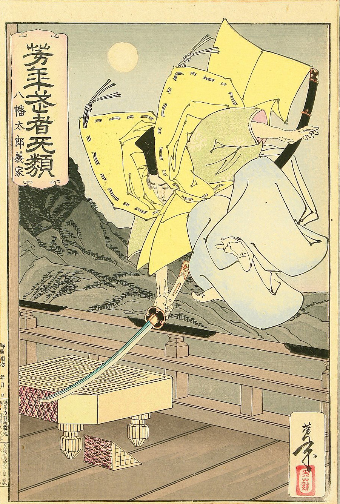

I wondered once myself. Still have no real idea :D. Is it fun? Sometimes. Other times it is painfull. Constantly reminds us about our blatant imperfection. Certainly a humbling experience. But the people are kind. Friends in suffering maybe. And the top is not even in sight.
And now that computers have shown us that there is a level of play even beyond what we imagined? You can safely assume that the top will be hidden in clouds forever. And yet we keep climbing.

I am happy you joined us. And since you are doing so good, I have unlocked one very special technique for you.